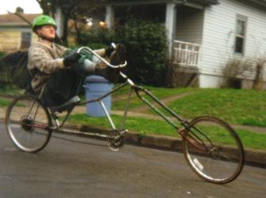
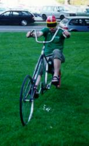
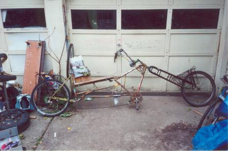
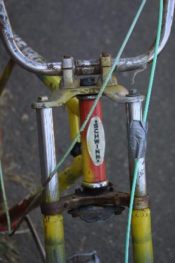
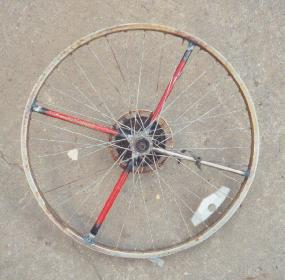
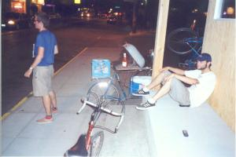
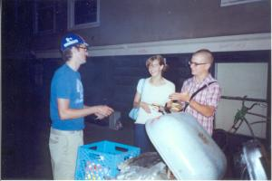
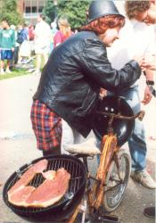
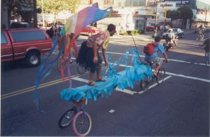

{kind=link}
{kind=link}
{kind=link}
{kind=link}

(trombone fork technical information.)
 
A recumbent chopper with a relaxed fork angle, long wheelbase, and low center of gravity makes for a very smooth ride despite the stupid name, which has been kept for historical reasons. With a large front wheel, Chopagator can slam straight into curbs and roll right over them, but the urge to do this must be resisted, because it puts too much stress on the frame and leads to frequent repairs.
Chopigator has been lost, found, and lost again. We got to missing it, so Plopulator was built. He was designed to be longer and stronger than his predecessor.

|
Unfortunately, this has made him quite heavy, so while the frame is solid, other parts don't hold up so well. The headset bearing races tended to crack, leading to play and stress at the headtube, smashed bearings, and bent steertubes being replaced about once a year. Then the headtube itself flared at the ends. At this point it was all over, since the races wouldn't stay put in their sockets, leading to smashed bearings and cracked races every few rides. Eventually the front end was sawed off and replaced with a fork from a crashed minibike, heavy as anything and anchored at the top and the bottom. Plopulator also tends to eat a rear wheel every six months. Lashing a spare on the back wasn't a big deal, but good wheels were getting scarce. This concern has been addressed with the homemade mag wheel, which may or may not be a good idea. A real 26 inch mag wheel is a treasure that our gleaners have vainly sought ever since we started welding too much stuff onto our bikes. |
 photo by Andrea and Max Drake.  |
When "Clark" visited us from New York City, he told us that he was having some money problems due to the high cost of living there. His solution was to build The Family Truckster, a bike with the capacity to cook and prepare burgers on the road (although someone else riding alongside must flip any burgers cooking while in transit).
|
For some reason, however, "Clark" failed to do better than break even. Standing in the street and harassing passersby didn't bring in the sales. Neither did banging on the windows of bars and showing the patrons inside how much he was enjoying his own delicious juicy burgers. It was also detrimental to his business when we ate much of his stock, and then threatened to barf on the sidewalk unless he gave us five bucks. "Clark" might have been disappointed, but the rest of us weren't. We once again had an opportunity to turn the streets of Portland into a celebration of freedom from the Man. Depressingly enough, the act of hanging out on the sidewalk among a crowd is now illegal in Portland due to the recently passed "Sit/Lie Ordinance", which was clearly designed to be applied selectively to undesirable elements such as bums and people who are having fun without spending lots of money. |
  |
| An early version of the Truckster was built in the mid nineties. Unlike the Truckster, it didn't have the ability to cook while rolling without roasting a certain amount of human flesh in the process. |  |
| Kawabunga! |  |
| Copyright 2003 Megulon Five <megulon5@dclxvi.org>. |
|
This work is licensed under a Creative Commons License. | Last modified 6 June 2003. |